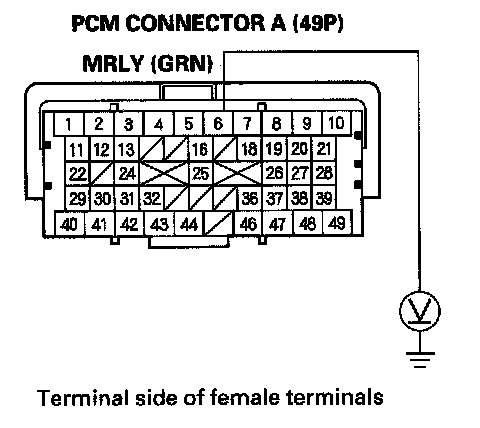
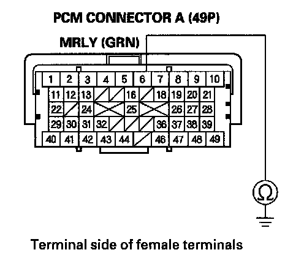
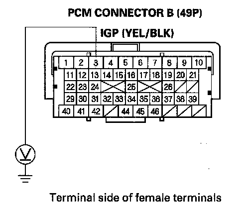
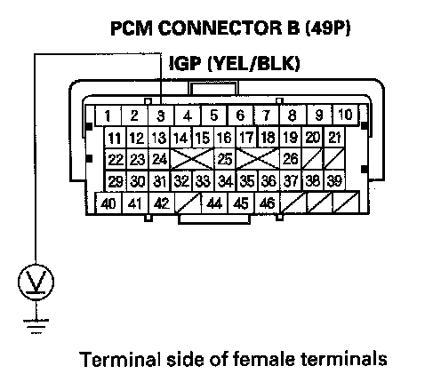

DTC Troubleshooting
DTC P0563: PCM Power Source Circuit Unexpected VoltageNOTE: Before you troubleshoot, record all freeze data and any on-board snapshot, and review the general troubleshooting information.
1. Turn the ignition switch ON (II).
2. Clear the DTC with the HDS.
3. Turn the ignition switch OFF.
4. Wait 10 seconds.
5. Turn the ignition switch ON (II).
6. Check for Temporary DTCs or DTCs with the HDS.
Is DTC P0563 indicated?
YES - Go to step 7.
NO - Intermittent failure, the system is OK at this time. Check for poor connections or loose terminals under-hood fuse/relay box (PGM-FI main relay 1) and the No. 8 IGP (15 A) fuse in the under-hood fuse/relay box and the PCM.
7. Turn the ignition switch OFF.
8. Jump the SCS line with the HDS.
9. Disconnect PCM connector A (49P).

10. Measure voltage between PCM connector terminal A6 and body ground.
Is there battery voltage?
YES - Go to step 13.
NO - Go to step 11.
11. Disconnect the under-hood fuse/relay box 14P connector.

12. Check for continuity between PCM connector terminal A6 and body ground.
Is there continuity?
YES - Repair short in the wire between the PCM (A6) and under-hood fuse/relay box (PGM-FI main relay 1), then go to step 19.
NO - Go to step 18. 13. Reconnect PCM connector A (49P).
14. Disconnect PCM connector B (49P).

15. Measure voltage between PCM connector terminal B3 and body ground.
Is there battery voltage?
YES - Go to step 16.
NO - Go to step 18.
16. Disconnect the under-hood fuse/relay box 9P connector.

17. Measure voltage between PCM connector terminal B3and body ground.
Is there battery voltage?
YES - Repair short to power in the wire between the PCM (B3) and under-hood fuse/relay box (PGM-FI main relay 1),then go to step 19.
NO - Go to step 18.
18. Test PGM-FI main relay 1 in the under-hood fuse/relay box.
Is PGM-FI main relay 1 OK?
YES - Go to step 26.
NO - Replace relay control module (under-hood fuse/relay box), then go to step 19.
19. Reconnect all connectors.
20. Turn the ignition switch ON (II).
21. Reset the PCM with the HDS.
22. Turn the ignition switch OFF.
23. Wait 10 seconds.
24. Do the PCM idle learn procedure.
25. Check for Temporary DTCs or DTCs with the HDS.
Is DTC P0563 indicated?
YES - Check for poor connections or loose terminals at under-hood fuse/relay box (PGM-FI main relay 1) and the PCM, then go to step 1.
NO - Troubleshooting is complete. If any other Temporary DTCs or DTCs are indicated, go to the indicated DTCs troubleshooting.
26. Reconnect all connectors.
27. Update the PCM if it does not have the latest software, or substitute a known-good PCM.
28. Check for Temporary DTCs or DTCs with the HDS.
Is DTC P0563 indicated?
YES - Check for poor connections or loose terminals at under-hood fuse/relay box (PGM-FI main relay 1) and the PCM. If the PCM was updated, substitute a known-good PCM, then recheck. If the PCM was substituted, go to step 1.
NO - If the PCM was updated, troubleshooting is complete. If the PCM was substituted, replace the original PCM. If any other Temporary DTCs or DTCs are indicated, go to the indicated DTCs troubleshooting.